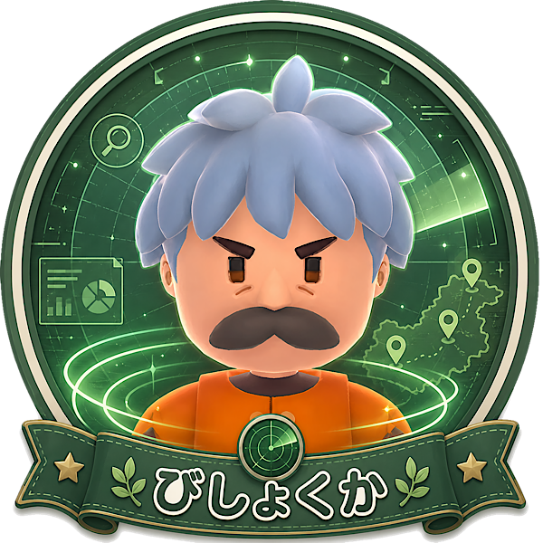

「わかる人にはわかる玄人」タイプ
あなたは、目立つ作業だけでなく、攻略の流れを支える重要ポイントに気づけるタイプ。
初心者には見えにくい問題でも、「ここが遅れると後で崩れる」と先回りして考えられます。
派手な活躍よりも、チームが詰まる原因を減らすことにやりがいを感じる人です。
ゲーム理解が深くなるほど、自分の役割の大事さを実感できるタイプです。
びしょくかは虫の居場所を探知できる、後半で強みが出やすいキャラです。
チーズやミルクなどの素材が必要になる場面では、虫探しの時間短縮がそのまま攻略の安定につながります。
一見わかりにくい能力ですが、素材調達の遅れを防げるのは大きな強みです。
先を読んでチームを支えたいあなたに向いています。